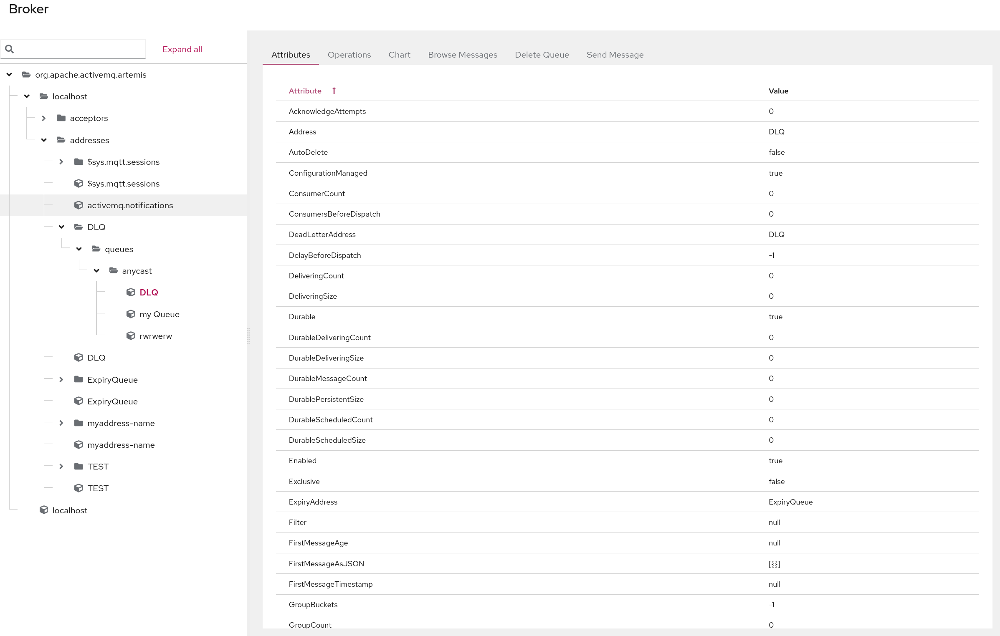
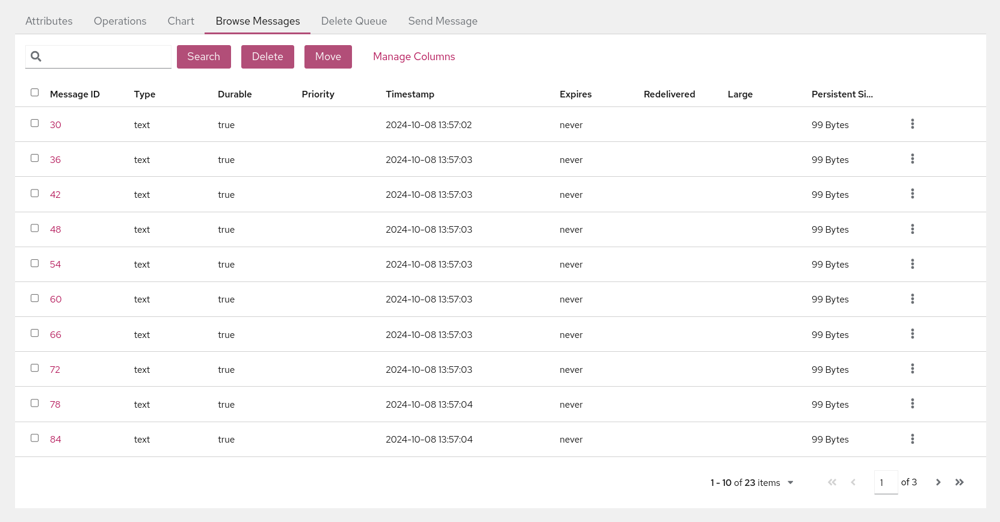
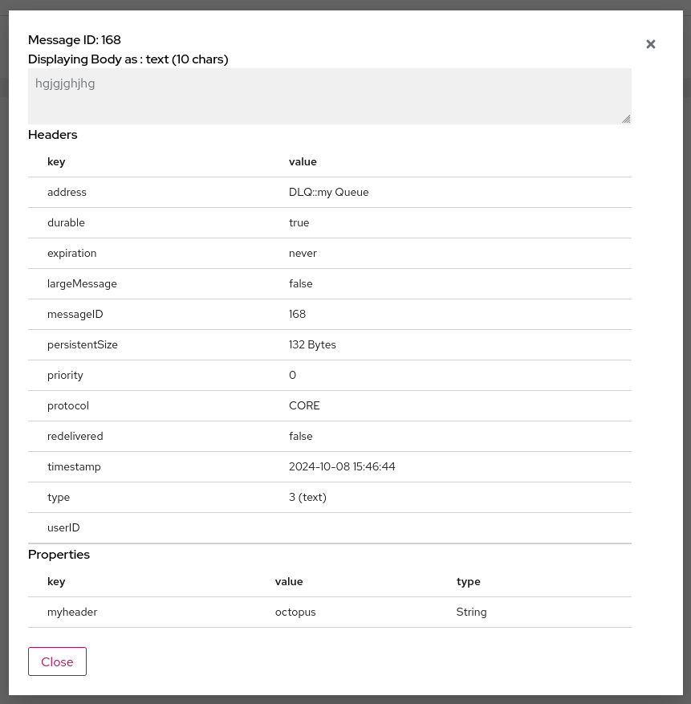
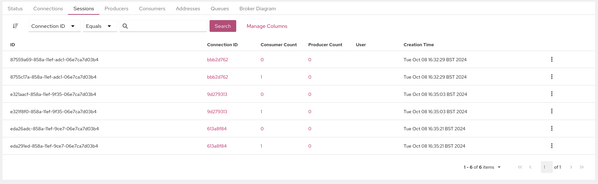
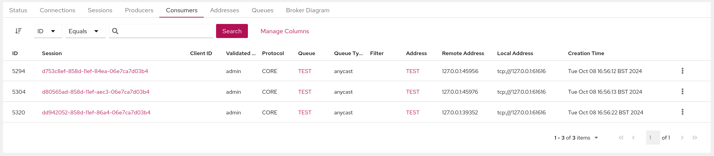
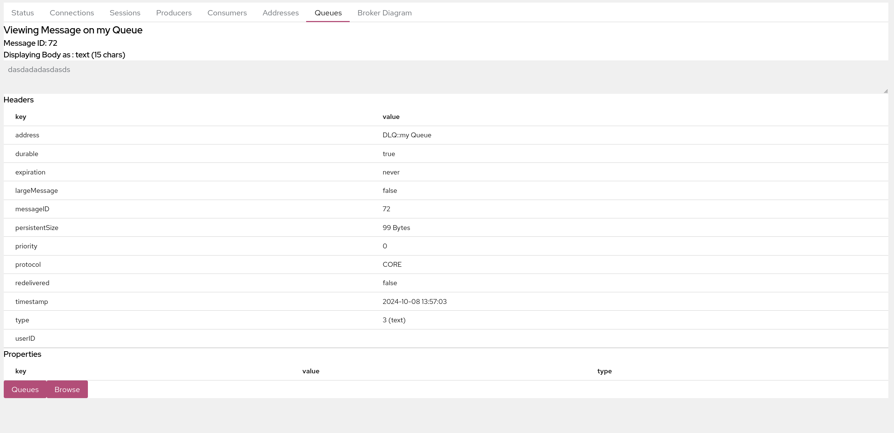

ActiveMQ Artemis Console Documentation
Documentation > Using The Console
Connecting To the Broker
Adding A Connection
Once you have navigated to the Connect page click on the Add connection button and fill in the Jolokia endpoint configuration of your broker.
The endpoint details will depend on your specific broker configuration, but can be easily found in a message printed to the console during broker startup. For instance, a fresh broker instance displaying startup message:
AMQ241002: Artemis Jolokia REST API available at http://localhost:8161/console/jolokia
Would yield connection details of:
Host: localhost
Port: 8161
Path: /console/jolokia
Configure these as needed for your specific broker instance. You can test the connection with the Test connection button before clicking Add to save the connection:

Once the connection is added simply click the Connect button for your broker and this should open up a new tab and prompt for a login attempt. Once logged in you should see the console with two Artemis menu items.

Navigating the Artemis Views
There are two Artemis views that are available from the left hand menu the Artemis view and the Artemis JMX view.
The Artemis JMX view navigates around resources using a JMX tree and presents the JMX Attributes and Operations of each specific MBean as well as functionality exposed.
The Artemis view is a set of tabs that exposes functionality in tabular views for paginating over broker resources such as Addresses and Queues.
Artemis JMX View
Click Artemis JMX in the left navigation bar to see the Artemis JMX specific plugin. (The Artemis tab won’t appear if there is no broker in this JVM). The Artemis plugin works very much the same as the JMX plugin however with a focus on interacting with an Artemis broker.
Tree View
The tree view on the left-hand side shows the top level JMX tree of each broker instance running in the JVM. Expanding the tree will show the various MBeans registered by Artemis that you can inspect via the Attributes tab. When a specific MBean is selected in the tree a set of related tabs become visible

Default Tabs
All MBeans will show the following tabs by default which are exposed on all MBeans.
Attributes
The Attributes tab shows all attributes that are configured on an MBean if permissions allow. Depending on the permissions of the user these may be editable.
Operations
The Operations Tab exposes a list of JMX operations that the selected MBean exposes. Depending on a users permissions these can be executed by expanding each operation.
Chart
The Chart tab allows you to view numerical data of an MBean along a time series.
Address Tabs
If the MBean selected is an Address MBean which are found under the addresses leaf in the tree then you will see the following tabs if permissions allow.
Create Queue
This tab will allow the user to create queues that are bound to the address that is selected. It exposes the ability to configure a sub set of available parameters on the queue, however extra configuration not exposed can be configured using a set of key/value pairs, for instance delay-before-dispatch or auto-delete.
Delete Address
The Delete tab allows you to delete an address completely.
NOTE: The Address can only be deleted if it has no queues and cannot be undone.
Send Message
This Send Message tab allows the user to send a message to an address, this in turn will route it to any queues that are bound to this address.
It allows message headers to be added and a body. Note that the message type created is always a Text Message.
NOTE: The sending of the message will be authenticated using the current logon user, unselect use current logon user to use a different user.
Queue Tabs
If the MBean selected is a Queue MBean then the following tabs are displayed.
NOTE: Queue MBeans are found under the Address MBean it is bound to.
Browse Messages
This allows the user to view a paginated list of the messages on the queue selected as well as being able to view, send and delete messages. Although the results size may be very large the console only fetches a single page anytime from the broker. The console will retrieve each page of messages afresh when the list is iterated over or the order or filters are changed.

Filtering Messages
The Browse tab can also filter messages using the JMS Message Selector Syntax as described in the Artemis Filter Expression Documentation. For instance if you wanted to filter on messages that contained the Message Header myheader which was set to octopus, you would enter myheader=’octopus’ in the text box in the top left hand side of the tab and click search.
Deleting Messages
Messages can be deleted in bulk by selecting the relevant checkbox of each message on the left hand side and clicking the Delete button. This will open up a dialog box to confirm deletion. Note that this operation cannot be undone.
NOTE: Messages can also be individually deleted by clickin on the 3 dots to the right of each message and clicking delete.
Moving Messages
Messages can be moved in bulk to another queue by selecting the relevant checkbox of each message on the left hand side and clicking the Move button. This will open up a dialog box that has a searchable drop down box for easy searching of available queues, simply start typing the name of the queue you want to move the messages too. Note that this operation cannot be undone.
Resending Messages
Messages can be resent to a different queue by clicking on the 3 dots to the right of the message and clicking resend. This will open up a dialog that allows you to send a copy of the message to a specific queue.
Browse a Message
It is possible to view the contents of a message by clicking on the 3 dots to the right of the message and clicking the view button. This will open up a dialog box showing the body, headers and properties of the message.

Note that the body of the message may not be viewable if it is not of type Text Message. All other messages are shown as bytes and will be transformed depending on the Browse Bytes Messages setting which can be set in the preferences.
NOTE: large messages are also truncated to protect the browser this can be configured in Artemis Address Settings
NOTE: The columns show can be configured by clicking on the Manage Columns link and selecting which columns should be shown. The column configuration is persisted to the browsers local storage and will be retrieved for each browser session.
Delete Queue
The Delete Queue tab allows you to either delete the whole queue or purge messages, that is remove all the messages in the queue.
Both will open a dialog box to confirm the operation. This operation cannot be undone.
Send Message
This Send Message tab allows the user to send a message directly to a queue, Note that unlike the Send Message to an address this will bypass any messages routing semantics and be placed directly on the queue.
It allows message headers to be added and a body. Note that the message type created is always a Text Message.
NOTE: The sending of the message will be authenticated using the current logon user, unselect use current logon user to use a different user.
Artemis View
Click Artemis in the left navigation bar to see the Artemis specific plugin. (The Artemis tab won’t appear if there is no broker in this JVM). The Artemis View unlike the JMX view is more orientated around paginating over the Brokers resources such as Addresses and Queue. The same functionality though is available as in the JMX view. The following tabs are available in the Artemis view.
All of the tabs in the Artemis View that show tabulated data will allow the user to configure which columns to show. This is persisted in the sessions local storage and available when a new session is started.
Status
The Status tab is the default tab shown after login and shows the basic state of the broker, including uptime, the Address memory used and the type of Broker deployed. It also shows the status of each Acceptor configured as well as the network status is a cluster of brokers. This Status refreshes every 5 seconds.
Connections
The Connections tab lists all the connection to the broker.

Connections can be ordered by clicking on the sort icon on the top left toolbar, selecting the Column to sort of and choosing either ascending or descending.
The list can also be filtered on multiple columns by choosing a column and operator from the dropdowns and entering a value to filter on by clicking the Search button.
Clicking on the Session Count value will navigate to the Sessions tab and automatically filter on the chosen connection.
The Session can be closed if permissions allow by clicking on the 3 dots to the right of the clicking the close button.
Sessions
The Sessions tab will list all the session open on the Broker.

Sessions can be ordered by clicking on the sort icon on the top left toolbar, selecting the Column to sort of and choosing either ascending or descending.
The list can also be filtered on multiple columns by choosing a column and operator from the dropdowns and entering a value to filter on by clicking the Search button.
Clicking on the Connection ID value will automatically navigate to the Connections tab and filter on that connection.
Clicking on the Consumer Count will automatically navigate to the Consumers tab and filter on the consumer chosen.
Clicking on the Producer Count will automatically navigate to the Producers tab and filter on the consumer chosen.
The Session can be closed if permissions allow by clicking on the 3 dots to the right of the clicking the close button.
Producers
The Producers tab will list all the producers open on the Broker.

Producers can be ordered by clicking on the sort icon on the top left toolbar, selecting the Column to sort of and choosing either ascending or descending.
The list can also be filtered on multiple columns by choosing a column and operator from the dropdowns and entering a value to filter on by clicking the Search button.
Clicking on the Session value will navigate to the Sessions tab and filter on the session chosen.
Clicking on the Address value will navigate to the Address tab and filter on that address
Consumers
The Consumers tab will list all the Consumers open on the Broker.

Consumers can be ordered by clicking on the sort icon on the top left toolbar, selecting the Column to sort of and choosing either ascending or descending.
The list can also be filtered on multiple columns by choosing a column and operator from the dropdowns and entering a value to filter on by clicking the Search button.
Clicking on the Session value will navigate to the Sessions tab and filter on the session chosen.
Clicking on the Address value will navigate to the Address tab and filter on that address
Clicking on the Queue value will navigate to the Address tab and filter on that queue
A consumer can be closed by clicking on the 3 dots to the right of the Consumer and clicking close.
Addresses
The Addresses tab will list all the Address on the Broker.

Addresses can be ordered by clicking on the sort icon on the top left toolbar, selecting the Column to sort of and choosing either ascending or descending.
The list can also be filtered on multiple columns by choosing a column and operator from the dropdowns and entering a value to filter on by clicking the Search button.
Clicking on the Queue Count value will navigate to the Address tab and filter on that address
The 3 dots on the right of each Address will allow the user to perform the following operations.
Show in Artemis JMX
This will navigate to the Artemis JMX view and automatically select the addresses MBean.
Attributes
This will open up a dialog showing all the Queues MBean attributes and allow editing if permissions allow.
Operations
This will open up a dialog showing all the Queues MBean operations and allow execution of permissions allow.
Delete Address
This will open up a dialog to confirm deletion of the Address if permissions allow.
Send Message
This will open up a dialog and allow the user to send a message to this queue if permissions allow.
Create Queue
This will open up a dialog and allow the user to send a message to this queue if permissions allow. this in turn will route it to any queues that are bound to this address.
It allows message headers to be added and a body. Note that the message type created is always a Text Message.
NOTE: The sending of the message will be authenticated using the current logon user, unselect use current logon user to use a different user.
Create Queue
This will open up a dialog which will allow the user to create queues that are bound to the address that is selected. It exposes the ability to configure a sub set of available parameters on the queue, however extra configuration not exposed can be configured using a set of key/value pairs, for instance delay-before-dispatch or auto-delete.
Queues
The Queues tab will list all the Address on the Broker.

Queues can be ordered by clicking on the sort icon on the top left toolbar, selecting the Column to sort of and choosing either ascending or descending.
The list can also be filtered on multiple columns by choosing a column and operator from the dropdowns and entering a value to filter on by clicking the Search button.
Clicking on the Address value will navigate to the Addresses tab and filter on the address chosen.
Clicking on the Consumer Count value will navigate to the Consumers tab and filter on the queue chosen.
Clicking on the Message Count value will show a different view allowing the user to browse messages.
This allows the user to view a paginated list of the messages on the queue selected as well as being able to view, send and delete messages. Although the results size may be very large the console only fetches a single page anytime from the broker. The console will retrieve each page of messages afresh when the list is iterated over or the order or filters are changed.
Filtering Messages
The Browse tab can also filter messages using the JMS Message Selector Syntax as described in the Artemis Filter Expression Documentation. For instance if you wanted to filter on messages that contained the Message Header myheader which was set to octopus, you would enter myheader=’octopus’ in the text box in the top left hand side of the tab and click search.
Deleting Messages
Messages can be deleted in bulk by selecting the relevant checkbox of each message on the left hand side and clicking the Delete button. This will open up a dialog box to confirm deletion. Note that this operation cannot be undone.
NOTE: Messages can also be individually deleted by clickin on the 3 dots to the right of each message and clicking delete.
Moving Messages
Messages can be moved in bulk to another queue by selecting the relevant checkbox of each message on the left hand side and clicking the Move button. This will open up a dialog box that has a searchable drop down box for easy searching of available queues, simply start typing the name of the queue you want to move the messages too. Note that this operation cannot be undone.
Resending Messages
Messages can be resent to a different queue by clicking on the 3 dots to the right of the message and clicking resend. This will open up a dialog that allows you to send a copy of the message to a specific queue.
From the browse view of this tab you can then browse a single message by clicking on the 3 dots to the right of the message and clicking the view button. This will then change the view to:

NOTE: You can navigate to and from each view by using the Queues and the *Browse * button at the bottom left hand corner.
Broker Diagram
The Broker Diagram tab shows a visual representation of the Broker, its Addresses and Queue and any other Broker that may be in the Cluster. You can choose which Nodes to show by clicking on the Node Options dropdown.
Clicking on the node will also fetch up the Attributes of the MBean associated with the node.

Security
Jolokia Access
The Jolokia JMX-HTTP bridge is secured via a policy file in the broker configuration directory: ‘etc/jolokia-access.xml’. The contents of that file should be modified as described in the Jolokia Security Guide. By default the console is locked down to ‘localhost’, pay particular attention to the ‘CORS’ restrictions when exposing the console web endpoint over the network.
MBean Access
Access to MBeans is configured in ActiveMQ Artemis, see the Management via JMX chapter.
Certain screen and tab visibility is controlled by the access to a specific JMX Operation, for instance the Create Queue tab is only shown if the user has access to the create queue JMX operation.
Single Sign on
Please refer to the HawtIO Documentation